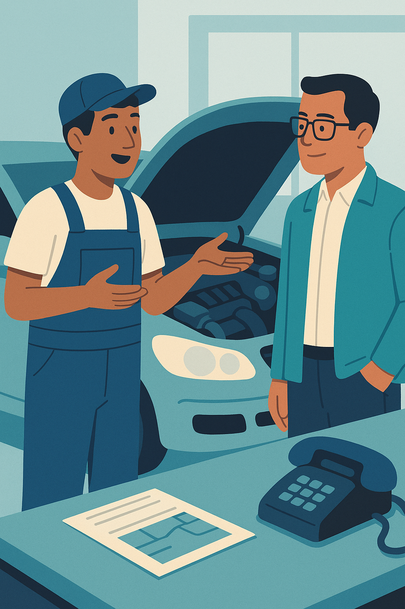

Unit 3: Vocabulary Focus – Tools, Processes and Workplace Changes
Why This Vocabulary Matters
Workplaces are dynamic, with new tools streamlining tasks, systems evolving, and teams adapting to stay effective. This vocabulary equips you to discuss these shifts with confidence. Whether explaining a new app in a meeting, drafting an email about a system update, or following a manager’s instructions, these terms will help you communicate with clarity and professionalism.
You’ll use this vocabulary to:
- Discuss changes in your job or company, like a new process or software.
- Explain how a tool or system works to colleagues or clients.
- Understand workplace announcements and instructions about updates.
- Write professional messages or emails about procedures and technology.
Let’s explore the key verbs, nouns, and expressions you’ll need!
1. Talking About Change
When a company adopts a new app or refines a process, how do you describe it? These verbs capture the actions teams take to introduce or enhance something, perfect for meetings, emails, or presentations.
| Verb | Meaning | Example |
|---|---|---|
| implement | To officially start using a new system, tool, or process. | We implemented a new scheduling tool last week to manage shifts better. |
| update | To improve something by bringing it to a newer version or fixing issues. | The team updated the platform yesterday, so it’s faster now. |
| introduce | To make something new available for the first time. | They introduced a feedback system to collect employee ideas. |
| improve | To make something better in quality, efficiency, or performance. | The new process improves efficiency by reducing paperwork. |
| adapt | To change something to suit new conditions or needs. | We adapted our routine after the system change to work remotely. |
2. Tools and Systems We Use at Work
From apps to workflows, workplaces rely on tools and systems. These nouns describe the technology and processes you’ll encounter, helping you follow instructions or explain operations.
| Noun | Meaning | Example |
|---|---|---|
| tool | A piece of software or a device designed for a specific task. | This tool helps us track performance metrics in real time. |
| platform | A digital environment where work, training, or collaboration happens. | We use a training platform for onboarding new employees. |
| system | A structured method or software for managing tasks or data. | The new payroll system is very intuitive and saves time. |
| process | A series of steps to complete a task or achieve a goal. | We changed the approval process to make it quicker. |
| interface | The visual design or layout users interact with on a device or software. | The new interface is easier to use, with clearer buttons. |
3. Useful Expressions in Context
These expressions blend verbs and nouns to describe workplace updates naturally, like launching a tool or training staff. Use them in announcements, emails, or conversations.
| Expression | Example |
|---|---|
| launch a new system/tool | We’re launching a new internal communication tool next month. |
| switch to a new platform | We switched to Teams last semester for better collaboration. |
| roll out a new feature | They rolled out a live chat option this morning for customer support. |
| undergo training | All staff will undergo cybersecurity training to protect our data. |
| carry out a task/process | You can carry out the task from your phone using the new app. |
4. Digital Tasks and Micro-Actions
Daily routines often involve small digital actions. These terms describe interactions with technology, helping you follow or give instructions clearly.
| Action | Example |
|---|---|
| log in to (a platform) | Log in to access the weekly schedule on the company platform. |
| upload / download | Upload your report to the shared drive or download the guidelines. |
| share a document | I shared the checklist with the team via email. |
| access a file/system | You need a password to access this file in the system. |
| track / monitor progress | We monitor student progress using a dashboard on the platform. |
How to Use This Vocabulary
These terms are versatile for written and spoken tasks. Try them in:
- Emails: “We’re rolling out a new feature next week.”
- Meetings: “This tool improves our efficiency.”
- Instructions: “Log in to the platform and upload your report.”
- Announcements: “We’ve implemented a new system to track progress.”
Practice using them in the unit’s tasks, like explaining a tool or writing an internal message about a change.
In the following sections, you will find specific vocabulary for your field.